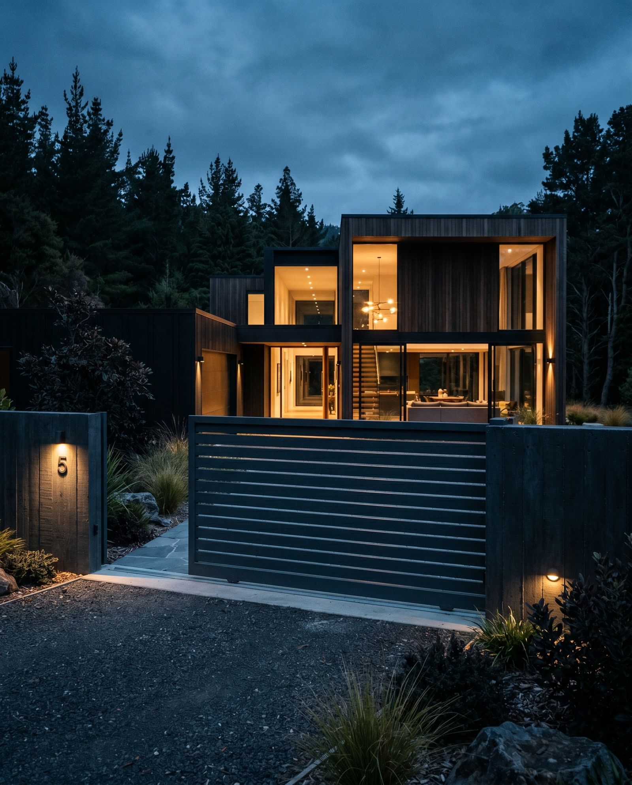
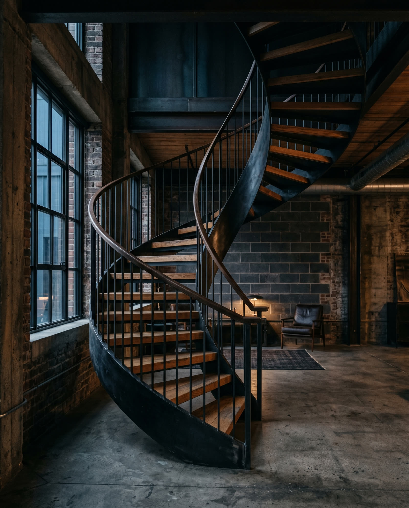
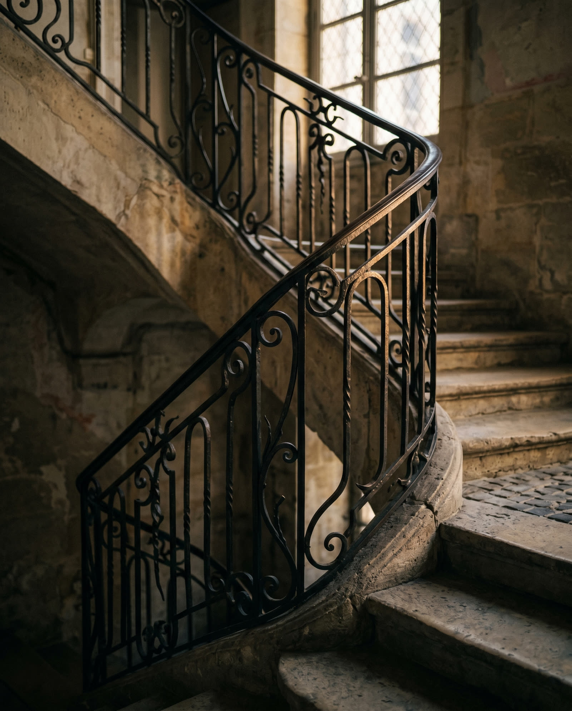
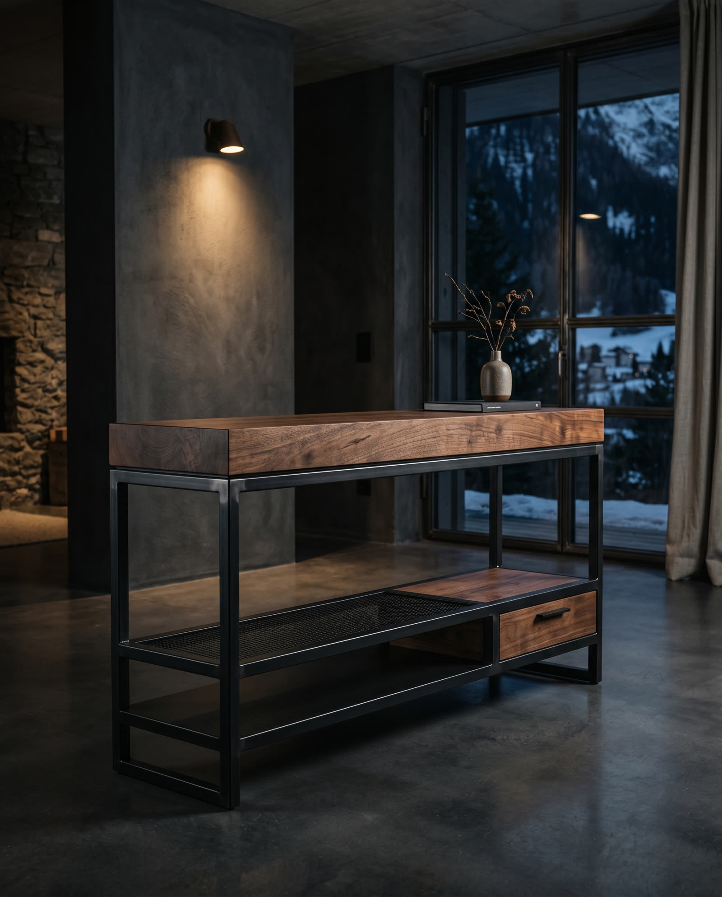
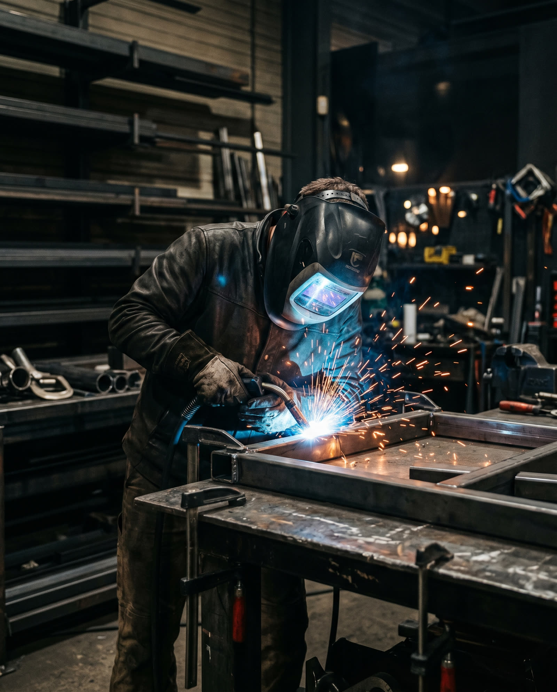
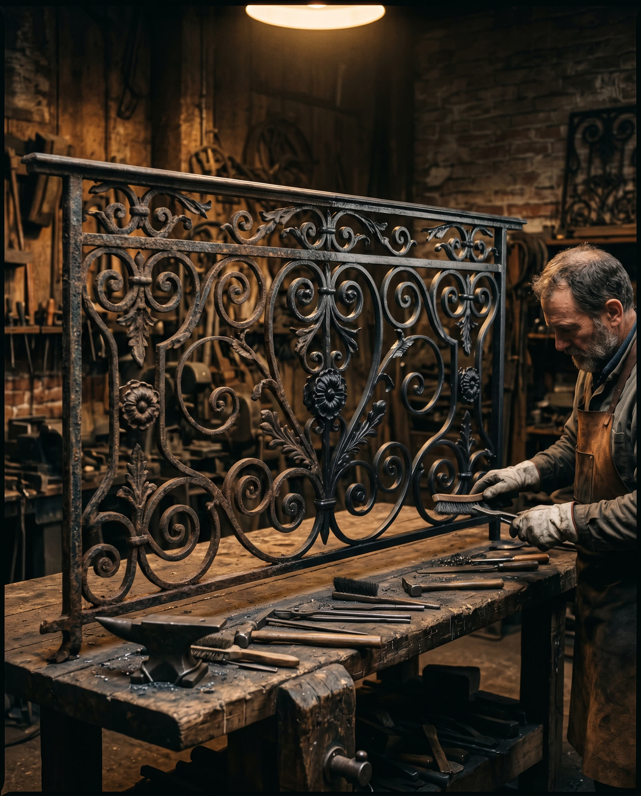

La précision n'est pas un détail. Chaque cote est vérifiée, chaque
soudure est propre, chaque chantier est livré à l'heure. C'est notre
façon de travailler le métal — sans compromis.
— Lucien Candaux, métallier-soudeur
Nos savoir-faire
Six métiers, une exigence

01
Barrières & Portails
Barrières, portails battants ou coulissants et grilles en acier ou aluminium. Fabrication sur mesure à l'atelier, motorisation possible et pose comprise : des entrées sobres, solides et durables.

02
Escaliers métalliques
Escaliers droits, hélicoïdaux ou suspendus, en acier brut, thermolaqué ou marié au bois. Calculés au millimètre, conformes aux normes et montés proprement, sans mauvaise surprise.

03
Garde-corps & Rampes
Garde-corps, rampes et mains courantes qui conjuguent sécurité et élégance, conformes aux normes en vigueur. Du trait contemporain au dessin plus classique, intérieur comme extérieur.

04
Meubles métalliques
Tables, consoles, étagères et agencements en acier marié au bois massif. Des pièces uniques dessinées avec vous, soudées et finies à l'atelier — du mobilier qui se transmet.

05
Créations sur mesure
Une idée, un croquis, un besoin particulier ? Soudure TIG et MIG sur acier, inox et aluminium : structures, mezzanines, pergolas, pièces uniques. Si c'est en métal, c'est possible.

06
Réparations & Entretien
Remise en état de barrières, portails, escaliers et structures existantes : renforcement, redressage, traitement anticorrosion, réglages et motorisation. Intervention rapide et soignée.
Métallier de la nouvelle génération, Lucien Candaux a appris le métier au plus
près de la matière : formation suisse exigeante, des années d'atelier et de
chantier, et une exigence de finition qui ne se négocie pas. Jeune, oui — mais
le cordon de soudure parle pour lui.
Tout est pensé, fabriqué et posé depuis l'atelier de Croy, au pied du Jura
vaudois : découpe, pliage, soudure TIG et MIG, finition. Chaque projet part
de cotes exactes, d'un dessin validé ensemble, et se termine par une pose
soignée, dans les délais annoncés. Swiss made, sans compromis.
Swiss made·Précision·Passion
Processus
Du relevé de cotes à la pose finale
01
Visite & relevé
Visite sur site, prise de cotes précise et échange sur vos besoins, votre bâti et vos contraintes.
02
Plans & devis
Plans détaillés, choix des matières et finitions, devis transparent et engagement de délai.
03
Fabrication à l'atelier
Découpe, pliage, soudure, finition : chaque pièce est fabriquée avec précision dans notre atelier de Croy.
04
Pose & finitions
Installation soignée par nos soins, réglages fins et garantie sur l'ouvrage posé.
Plan d'exécutionN° LC-2026-01AtelierLucien Candaux — MétallerieLieu1322 Croy · VDÉchelle1:1
Contact
Parlons de votre projet
Une barrière, un escalier, un meuble, une réparation ou une pièce unique ?
Décrivez votre projet : nous revenons vers vous sous 48 heures avec un premier avis et un chiffrage clair.
AtelierRoute de la Gare 4, 1322 Croy — Vaud, Suisse